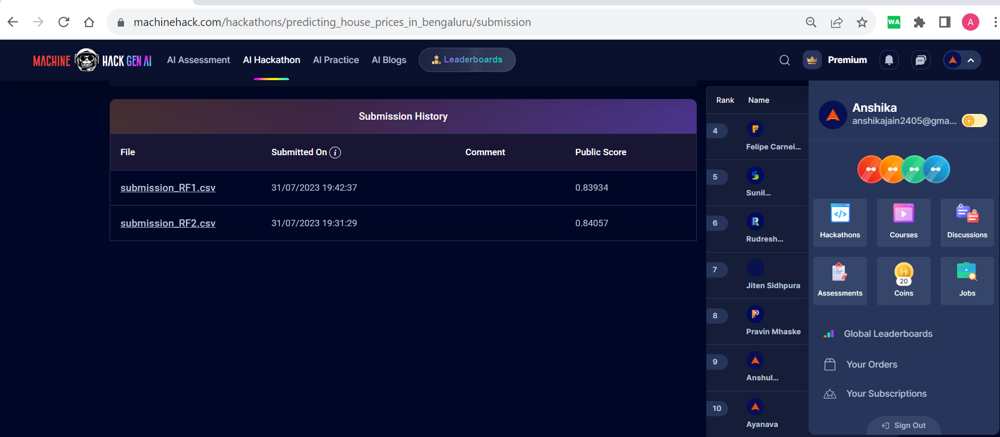

import pandas as pd
import numpy as np
import seaborn as sns
import matplotlib.pyplot as plt
from sklearn.compose import ColumnTransformer
from sklearn.preprocessing import OneHotEncoder, StandardScaler
from sklearn.pipeline import make_pipeline
from sklearn.linear_model import LinearRegression
from sklearn.ensemble import RandomForestRegressor
from sklearn.model_selection import train_test_split
from sklearn.metrics import r2_score
import joblib
import os
from src.utils import preprocess_data
from src.utils import feature_enggSetup
Data Ingestion
model_df = pd.read_csv(r"data\processed\cleaned.csv")Linear Regression Model
X= model_df[['area_type', 'total_sqft', 'bath', 'balcony', 'extract']]
Y = model_df['price']
# x_train, x_test, y_train, y_test = train_test_split(X, Y, test_size=0.25, random_state=50)
column_trans = ColumnTransformer(transformers=
[('onehot', OneHotEncoder(), ['area_type', 'extract']),
('scaler', StandardScaler(), ['total_sqft', 'bath', 'balcony'])],
remainder='passthrough')
pipeline = make_pipeline(column_trans, LinearRegression())
pipeline.fit(X, Y)
# y_pred = pipeline.predict(x_test)
filename = os.path.join("models", "1st_model_LR.joblib")
joblib.dump(pipeline, filename)
loaded_model_LR = joblib.load(filename)
result = loaded_model_LR.score(X, Y)
print(result)0.6067557185468784Random Forest Regressor Model
X = model_df[['area_type', 'total_sqft', 'bath', 'balcony', 'extract']]
Y = model_df['price']
# x_train, x_test, y_train, y_test = train_test_split(X, Y, test_size=0.25, random_state=50)
column_trans = ColumnTransformer(transformers=
[('onehot', OneHotEncoder(), ['area_type', 'extract']),
('scaler', StandardScaler(), ['total_sqft', 'bath', 'balcony'])],
remainder='passthrough')
pipeline = make_pipeline(column_trans, RandomForestRegressor())
pipeline.fit(X, Y)
# y_pred = pipeline.predict(x_test)
filename = os.path.join("models", "1st_model_RF.joblib")
joblib.dump(pipeline, filename)
loaded_model_RF1 = joblib.load(filename)
result = loaded_model_RF1.score(X, Y)
print(result)0.9008407235508414Checking random forest by adding the parameter that was found to be highly correlated during EDA, but we know that since the values in parameter size were very less it is possible that the correlation matrix results are not as accurate.
X = model_df[['area_type','size','total_sqft', 'bath', 'balcony', 'extract']]
Y = model_df['price']
# x_train, x_test, y_train, y_test = train_test_split(X, Y, test_size=0.25, random_state=50)
column_trans = ColumnTransformer(transformers=
[('onehot', OneHotEncoder(), ['area_type', 'extract']),
('scaler', StandardScaler(), ['size','total_sqft', 'bath', 'balcony'])],
remainder='passthrough')
pipeline = make_pipeline(column_trans, RandomForestRegressor())
pipeline.fit(X, Y)
# y_pred = pipeline.predict(x_test)
filename = os.path.join("models", "2nd_model_RF.joblib")
joblib.dump(pipeline, filename)
loaded_model_RF2 = joblib.load(filename)
result = loaded_model_RF2.score(X, Y)
print(result)0.9172092534407454Evaluation
Using the test data to evaluate our models created. - We first read the test file - Then preprocess the test file - Finally we add the new features in the test file
test_data = pd.read_csv(r"data/raw/Test.csv")
clean_test_data = preprocess_data(test_data)
clean_test_data = feature_engg(clean_test_data)Linear Regression
x_test = clean_test_data[['area_type','total_sqft', 'bath', 'balcony', 'extract']]
y_pred = clean_test_data['price']
y_pred_lr = loaded_model_LR.predict(x_test)
result = loaded_model_LR.score(x_test, y_pred_lr)
print("R-squared value on test data:", result)R-squared value on test data: 1.0
R-squared value on test data: 1.0Random Forest
Using the first random forest model
clean_test_data.head()| area_type | availability | location | size | society | total_sqft | bath | balcony | price | month | ready | extract | |
|---|---|---|---|---|---|---|---|---|---|---|---|---|
| 0 | Super built-up Area | Ready To Move | Brookefield | 2.0 | Roeekbl | 7.111512 | 2.0 | 2.0 | NaN | NaN | Ready To Move | Ready To Move |
| 1 | Plot Area | Ready To Move | Akshaya Nagar | 9.0 | others | 7.783641 | 9.0 | 2.0 | NaN | NaN | Ready To Move | Ready To Move |
| 2 | Plot Area | 18-Apr | Hennur Road | 4.0 | Saandtt | 7.409136 | 5.0 | 2.0 | NaN | Apr | NaN | Apr |
| 3 | Super built-up Area | Ready To Move | Kodichikkanahalli | 3.0 | Winerri | 7.187657 | 3.0 | 1.0 | NaN | NaN | Ready To Move | Ready To Move |
| 4 | Super built-up Area | Ready To Move | Konanakunte | 2.0 | AmageSa | 7.057898 | 2.0 | 1.0 | NaN | NaN | Ready To Move | Ready To Move |
x_test = clean_test_data[['area_type','total_sqft', 'bath', 'balcony', 'extract']]
y_pred = clean_test_data['price']
loaded_model_RF1 = joblib.load(os.path.join("models", "1st_model_RF.joblib"))
y_pred_rf1 = loaded_model_RF1.predict(x_test)
price = np.expm1(y_pred_rf1)
# result = loaded_model_RF1.score(x_test, y_pred_rf1)
# print("R-squared value on test data:", result)headerList = ['price']
pd.DataFrame(price).to_csv(r'data\final\submission_RF1.csv',header=headerList, index_label= 'id')Using the second random forest model
x_test = clean_test_data[['area_type','size','total_sqft', 'bath', 'balcony', 'extract']]
y_pred = clean_test_data['price']
y_pred_rf2 = loaded_model_RF2.predict(x_test)
price = np.expm1(y_pred_rf2)
# result = loaded_model_RF2.score(x_test, y_pred_rf2)
# print("R-squared value on test data:", result)headerList = ['price']
pd.DataFrame(price).to_csv(r'data\final\submission_RF2.csv',header=headerList, index_label= 'id')Machine hack r score
